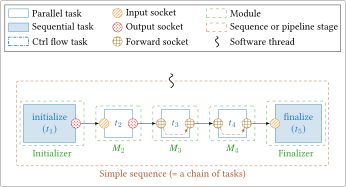

Sequence¶
A sequence is a set of bound tasks. It represents the graph to execute for each new frame (= new stream). When a sequence is built, the tasks execution order is fixed. Thus, for each frame, the graph is executed following a fixed "sequence" of tasks.

A sequence is a C++ object of the spu::runtime::Sequence class. The
following sections try to give an overview of the most important attributes and
methods to facilitate the code understanding.
Main Attributes¶
The number of threads that are executing the sequence. Vector of sub-sequences of the main sequence (one per thread).std::vector<size_t> firsts_tasks_id;
std::vector<size_t> lasts_tasks_id;
std::vector<std::vector<runtime::Task*>> firsts_tasks;
std::vector<std::vector<runtime::Task*>> lasts_tasks;
Main Methods¶
This is the public method that runs the sequence in loop. Other variants exist where it is possible to give a stop condition function. This function is one of the most important of the sequence class, it is called by theSequence constructor. Its main purpose is to parse the sub-sequence
graph and to perform some operations that can modify the user bindings.
Additionally, some tasks can be optimized and/or interpreted as a DSEL keyword.
Warning
Before reading the following paragraph you should be familiar with the Adaptor and Switcher modules.
Here is a list of the transformations that are performed during the
gen_processes method:
push&pulltasks (fromAdaptormodule): as explained in the adaptor's section, tasks change theirdataptrwhen they get the new buffers from the inter-stage pool, the new pointer needs to be updated for each socket bound to the old one. This behavior is added through aprocess(nothing to do with OS processes) that encapsulatespushandpulltasks. Thisprocessis triggered each time there is apullorpushtask execution in the sequence.commute&selecttasks (fromSwitchermodule): these two tasks are used to select which path to flow for the execution, when a path is selected the bound sockets need to update theirdataptrto follow the right one. Same as before, a dedicatedprocessis created and triggered.- Other tasks: a dumb
processwill be created for each task and it will only call its corresponding task.
gen_processes to get all the bound sockets (next) of
the modified one, if the encountered socket is of type forward the function is
called recursively on this new socket (see the
Forward socket and pipeline section). This call is performed
once at sequence build.
Warning
This function is no longer a method of the runtime::Sequence class, it is
now integrated as an anonymous (= lambda) function in the gen_processes
method. This is because explore_thread_rec is only used in
gen_processes.
Warning
This function is no longer a method of the runtime::Sequence class, it is
now integrated as an anonymous (= lambda) function in the gen_processes
method. This is because explore_thread_rec_reverse is only used in
gen_processes.
Sub-sequence¶
When control flow tasks are introduced into a sequence, the
execution is not only defined by the tasks binding but also by their output
sockets. For this purpose, tasks are grouped into sub-sequences. Sub-sequences
are organized in a directed graph with two nodes designated as begin
and end, respectively. This graph is recursively built during a sequence
initialization from the first task and going from bound output/forward
socket to bound input/forward socket. When a control flow task (select or
commute) is reached, a new control flow node is created and new children nodes
for each of its paths. Only a single of those paths can be taken during
execution, hence why they are referred to as exclusive paths. This also
means that a sequence with no control flow task will always have a single
sub-sequence, because it has a single path.
Upon execution the sequence will iterate over its sub-sequences and execute
every task they contain, if one of those tasks happens to be a commute it will
select the children node designated by its path attribute, thus branching in
the execution.
spu::runtime::Sub_sequence (not to be confused with
spu::module::Subsequence!) main attributes are described in the following
section.
Main Attributes¶
The sub-sequence types can be:STD, COMMUTE and SELECT. This type is used
by the _exec() method to determine which exclusive path to take during
execution.
Whenever _exec() reaches a new sub-sequence it executes every function
contained in this list, there is one for each task in the sub-sequence. Refer to
gen_processes() to understand how they are created and what they contain.
The ids of the tasks the processes were generated from, tasks_id[0] is the
id of the task that processes[0] was made with.
The sub-sequence's id.
std::vector<std::vector<std::vector<runtime::Socket*>>> rebind_sockets;
std::vector<std::vector<std::vector<void*>>> rebind_dataptrs;
gen_process() method to save the sockets
and their dataptr to update during the runtime rebinding.
Digraph Node¶
Sub-sequences make up a directed graph. Whenever a sub-sequence
is accessed, it is through this class (spu::tools::Digraph_node) as
sub-sequences themselves do not contain information regarding the graph.